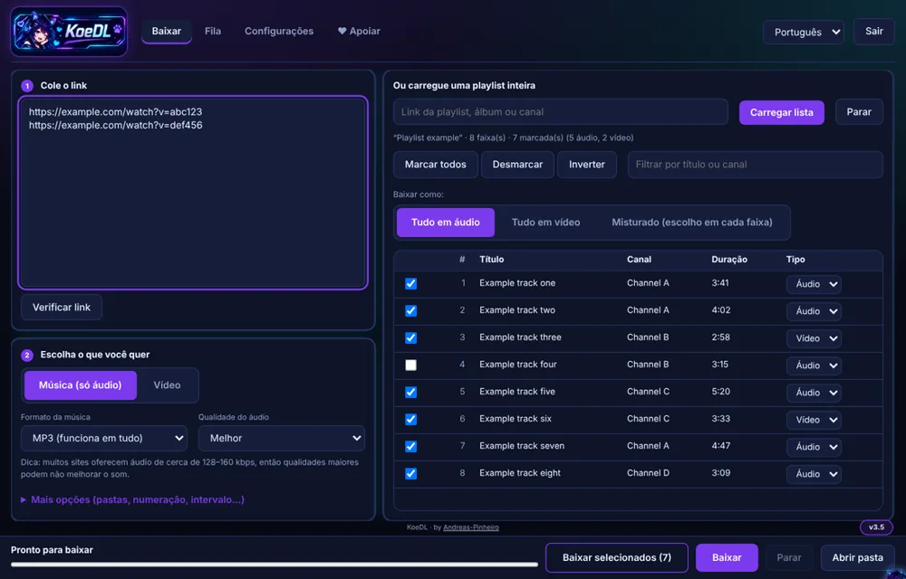

Cole o link. Baixe. Pronto.Paste the link. Download. Done.
KoeDL é um programa gratuito para Windows que baixa música e vídeo de milhares de sites. Simples, bonito e sem Python.KoeDL is a free Windows app that downloads music and video from thousands of sites. Simple, good-looking and no Python.
Baixar para WindowsDownload for WindowsGitHub
RecursosFeatures
Tudo o que você precisa, sem complicação.Everything you need, no fuss.
Como usarHow to use
Em 4 passos.In 4 steps.
- Baixe o KoeDL-Setup.exe na página de Releases.Download KoeDL-Setup.exe from the Releases page.
- Execute, escolha Instalar neste PC ou Versão portátil e clique em Instalar.Run it, choose Install on this PC or Portable version and click Install.
- Abra o KoeDL pela Área de Trabalho ou pelo Menu Iniciar. Na primeira vez ele baixa yt-dlp, ffmpeg e deno (precisa de internet).Open KoeDL from the Desktop or Start Menu. The first time it downloads yt-dlp, ffmpeg and deno (internet required).
- Cole os links, escolha música ou vídeo e clique em Baixar. Os arquivos ficam em
Downloads\KoeDL.Paste the links, choose music or video and click Download. Files go toDownloads\KoeDL.
TelasScreenshots


FAQ
O Windows avisou que o arquivo não é seguro. E agora?Windows warned the file is not safe. Now what?
Os executáveis não são assinados digitalmente, então o SmartScreen pode avisar. Clique em Mais informações → Executar assim mesmo, ou confira o SHA-256 publicado na release. O código é aberto: você pode ler tudo no GitHub.The executables are not digitally signed, so SmartScreen may warn. Click More info → Run anyway, or check the SHA-256 published with the release. The code is open: you can read everything on GitHub.
É grátis?Is it free?
Sim. O KoeDL é gratuito e de código aberto. Há uma faixa discreta de patrocinador que você pode desligar em Configurações.Yes. KoeDL is free and open source. There is a discreet sponsor strip you can turn off in Settings.
Funciona em Mac ou Linux?Does it work on Mac or Linux?
O foco é o Windows. Existe um script koedl.sh para Linux, ainda com menos testes.Windows is the focus. There is a koedl.sh script for Linux, with less testing.
Um site não baixa. O que fazer?A site will not download. What to do?
Abra o KoeDL de novo: o yt-dlp se atualiza ao iniciar e o item que falhou é tentado outra vez. Se for um site que exige login, use a opção de cookies do navegador.Reopen KoeDL: yt-dlp updates on start and the failed item is retried. If the site needs a login, use the browser cookies option.
Posso baixar qualquer coisa?Can I download anything?
Não. Use só para conteúdo que você tem direito de baixar (seu, livre ou com permissão) e respeite os termos de cada site e as leis do seu país.No. Use it only for content you have the right to download (yours, free or permitted) and respect each site’s terms and your country’s laws.
Vocês coletam meus dados?Do you collect my data?
O programa não envia o que você baixa para ninguém. Veja os detalhes na política de privacidade.The program does not send what you download to anyone. See the details in the privacy policy.